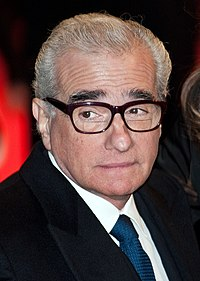

Réalisation
Le film a été réalisé par Martin Scorsese en 1976.
Synopsis
Travis Bickle, jeune homme du Midwest et ancien marine, est chauffeur de taxi de nuit à New York. Insomniaque et solitaire, il rencontre un jour Betsy, une assistante du sénateur Charles Palantine, candidat à la présidentielle, mais elle le repousse après qu’il l’a emmenée voir un film pornographique. Renvoyé à sa solitude et confronté à la violence et à la perversion de la nuit new-yorkaise, il achète des armes au marché noir et s’entraîne à les manier…
Critiques
Le film est régulièrement cité par les critiques, les réalisateurs et les cinéphiles comme l’un des plus grands films de tous les temps. Il remporte la Palme d’or du festival de Cannes 1976 et a été nommé pour quatre Oscars, dont celui du meilleur film.
En 1994, Taxi Driver est sélectionné pour être conservé par le National Film Registry de la bibliothèque du Congrès américain, pour son « importance culturelle, historique ou esthétique ».
En juin 2003, Travis Bickle est sélectionné par l'American Film Institute en tant que 30e méchant le plus emblématique du cinéma américain dans le classement AFI’s 100 Years… 100 Heroes and Villains.